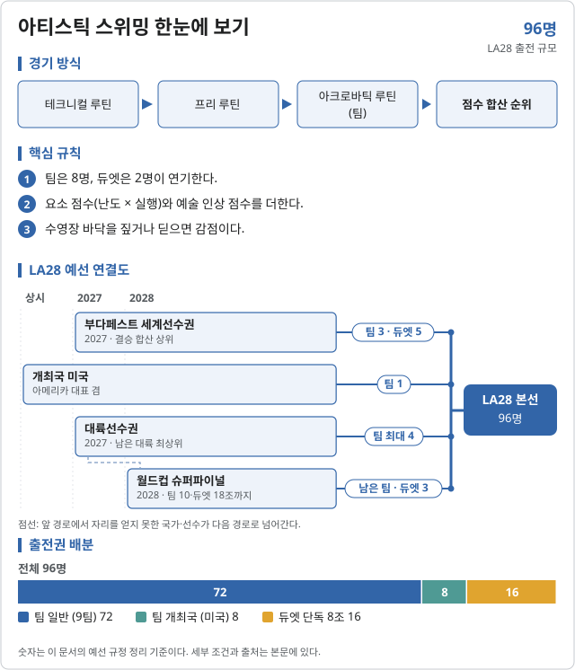

아티스틱 스위밍 (Artistic swimming)

2026 주요 대회 결과 2026-11-07 12:26 KST
위키백과 대회 문서에서 자동으로 모은다. 대회 중에는 한 시간마다 새로 읽는다. 한국 선수가 있는 줄은 붉게 칠했다. 하계 실시간 전체 →
아이치·나고야 아시안게임 아이치·나고야 · 09.26~09.28 종료 결과 2/2종목 · 한국 금0 은0 동0
| 종목 | 금 | 은 | 동 |
|---|---|---|---|
| Medalists | |||
| Duet | |||
| 단체 | |||
메달 순위:  중국 2-0-0 ·
중국 2-0-0 ·  일본 0-2-0 ·
일본 0-2-0 ·  카자흐스탄 0-0-2
카자흐스탄 0-0-2
출처: 위키백과 Artistic swimming at the 2026 Asian Games · 2026-11-06 22:37 읽음
예선 규정
이벤트 및 출전 쿼터
팀 10개국과 듀엣 18조, 전체 96명이 출전한다. 팀 출전국은 듀엣도 자동 출전하며 듀엣은 팀 8명 중에서 꾸린다. 쿼터는 국가 올림픽위원회(NOC)에 배정된다.
| 세부종목 | 일반쿼터 | 개최국쿼터 | 보편성쿼터 | 합계 |
|---|---|---|---|---|
| 팀 (듀엣 10조 포함) | 72 | 8 | 0 | 80 |
| 듀엣 단독 8조 | 16 | 0 | 0 | 16 |
| 합계 | 88 | 8 | 0 | 96 |
개최국 미국은 팀 1자리(8명)로 듀엣도 자동 출전한다. 보편성쿼터는 없다.
예선 경로
팀과 듀엣 모두 우선순위 순서로 정한다. 마지막 경로는 2028 월드컵 슈퍼파이널이다.
팀 · 8명 (남녀 출전 가능)
팀 선발 경로
10팀 · 80명 · 규정 ↗
| 경로 | 쿼터 | 선발 방식 |
|---|---|---|
| 우선 1 · 부다페스트 2027 세계선수권 | 3팀 | [1] |
| 우선 2 · 개최국 (미국) | 1팀 | [2] |
| 우선 3 · 2027 대륙선수권 | 최대 4팀 | [3] |
| 우선 4 · 2028 월드컵 슈퍼파이널 | 잔여 (10팀까지) | [4] |
- [1]테크니컬·프리·아크로바틱 결승 점수 합산 상위 3개 국가 올림픽위원회(NOC). 동점으로 3팀을 넘으면 모두 받는다.
- [2]미국은 팀 1자리를 받고 아메리카 대륙 대표를 겸한다.
- [3]우선 1·2로 대표가 나온 대륙(아메리카 포함)은 제외. 나머지 대륙(아프리카·아시아·유럽·오세아니아) 2027 대륙선수권 최상위 1팀씩. 대륙선수권이 없으면 부다페스트 대륙 최상위.
- [4]2028 슈퍼파이널(2028.04–05, 장소 미정) 점수 합산 순으로 10팀이 될 때까지. 예상 3~4팀.
듀엣 · 2명
듀엣 선발 경로
18조 · 팀 출전국 외 16명 · 규정 ↗
| 경로 | 쿼터 | 선발 방식 |
|---|---|---|
| 우선 1 · 팀 출전국 | 10조 | [1] |
| 우선 2 · 부다페스트 2027 세계선수권 | 5조 | [2] |
| 우선 3 · 2028 월드컵 슈퍼파이널 | 3조 | [3] |
- [1]팀 쿼터를 얻은 10개국(개최국 포함)은 듀엣 1조가 자동으로 출전한다. 듀엣은 팀 8명 중에서 구성한다.
- [2]테크니컬·프리 결승 합산으로 팀 쿼터가 없는 국가 중 상위 5개국.
- [3]슈퍼파이널 테크니컬·프리 합산으로 아직 쿼터가 없는 국가 중 상위 3개국. 듀엣 18조를 넘을 수 없다.
개최국·보편성 쿼터
개최국 미국은 팀 1자리를 받고 아메리카 대륙 대표를 겸한다. 쓰지 않으면 팬아메리칸게임 차순위 국가에 간다(아메리카 국가가 우선 1로 확보하지 않은 경우).
보편성 쿼터는 없다.
참가 자격
올림픽 헌장(제41조 국적, 제43조 세계반도핑규약 및 경기 조작 방지 규정), 여성 카테고리 보호에 관한 IOC 정책, IOC 참가 조건 및 World Aquatics 규정을 충족해야 한다.
- 2013.12.31 이전 출생이어야 한다(2028.12.31 기준 15세).
- 팀과 듀엣에 모두 출전하는 국가는 최대 8명이며, 듀엣은 팀 선수 중에서 구성한다.
- 원문 팀 종목은 남녀(MEN/WOMEN)로 표기되어 남자 선수도 팀에 들어갈 수 있다.
쿼터는 국가 올림픽위원회(NOC)에 배정된다.
예선 일정
예선 및 대회 일정
2026년에는 아티스틱 스위밍 예선 대회가 없다. 첫 예선은 2027 대륙선수권과 부다페스트 세계선수권이다.
| 날짜 | 일정 |
|---|---|
| 2027 (미정) | 아프리카·아메리카·아시아·유럽·오세아니아 대륙선수권 |
| 2027.07.11–18 | 부다페스트 2027 세계선수권 아티스틱 스위밍 |
| 2027.08.03 · 08.17 | 부다페스트 쿼터 통보 · 확정 (개최국 확정 08.17) |
| 2028.04–05 (미정) | 2028 월드컵 슈퍼파이널 |
| 2028.06.26 | LA28 스포츠 엔트리 마감 |
| 2028.07.25–29 | LA28 아티스틱 스위밍 |
직전 올림픽 메달리스트
2024 파리 올림픽
대한민국
한국 출전 전망
2026-10-04 기준 참고현재 성적을 LA28 규정에 단순 적용한 참고치이며 2028 확정 전망이 아님.
듀엣 경로 중심 · 인원 범위 미산정
팀은 아시아 대륙 1자리가 있지만, 중국 등 아시아 팀이 부다페스트 2027 상위 3위에 들면 아시아 대륙 자리가 사라진다. 한국은 듀엣 경로(부다페스트 5조·슈퍼파이널 3조)가 현실적이다.
| 선수·팀 | 공개 성적 | 근거 |
|---|---|---|
| 허윤서·김지윤 (듀엣) | 아시안게임 5위 (504.5664점, 7개 조 중) | 뉴스핌 · 2026.09.27 |
| 아시안게임 듀엣 1~3위 | 중국 640.3576 · 일본 601.5566 · 카자흐스탄 565.7326 | 뉴스핌 · 2026.09.27 |
듀엣: 팀 출전 10개국을 뺀 국가 중 부다페스트 2027 상위 5개국, 슈퍼파이널 상위 3개국이 듀엣 쿼터를 얻는다. 중국·일본은 팀으로 듀엣을 자동 확보할 가능성이 커서, 듀엣 전용 경로에서는 그 국가들과 직접 겨루지 않는다.
팀: 아시아 대륙선수권 최상위 팀 1자리가 있으나, 아시아 국가가 부다페스트 3위 안에 들면 이 자리는 생기지 않는다.
자료 기준: 2026 아시안게임 아티스틱 스위밍 듀엣 결과. 아시안게임은 예선 경로가 아니다.
아티스틱 스위밍 · 올림픽예선 | 규정 확인 2026.10.04 · 한국 전망 기준 2026.10.04
각주
외부 링크
공식 근거
- World Aquatics · LA28 Qualification System, Artistic Swimming (PDF, 2026.05.12)
- 뉴스핌 · 아시안게임 듀엣 허윤서·김지윤 5위 (2026.09.27)
규정 확인일: 2026.10.04. IOC가 게시한 World Aquatics 원문 PDF(8쪽, Version as of 12 May 2026)를 기준으로 정리했다. 본 문서는 비공식 한국어 요약이며 최종 적용은 World Aquatics 공지를 따른다.